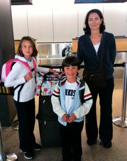

Have you ever considered spending an extended period of time in Italy? If you are like me, you probably did many times. And if you've kids, you might have shelved this dream considering all the complications that come with any international move. As an Italian mom living in the US for more than 13 years, the idea of giving to my kids the opportunity to experience Italy more than just as tourists was extremely appealing. So after some long conversations with my husband and some careful planning, we decided it was worth the try. My two young kids (Alessio, 6 and Silvia, 9) would attend a local elementary school for four months. For conveniency, we chose our hometown Trieste as our destination. In Trieste we still have our extended family that helped us with some of the logistics such as finding a rental apartment and getting some of the school paperwork done. Admittedly, knowing the language and having local support made things smoother, especially due to the time difference (9 hours) and the inability to use the Internet to get through some of the school red tape. As a small business owner, I was able to put on hold my activity. My husband's job in high tech wouldn't let him leave for too long, so he decided to stay in the US and reach us later for a vacation. So, here I am, back to my hometown, Trieste, where I’ll stay until Christmas, with my kids attending the same Italian elementary school I was attending when I was their age… While there, I'll try to cover some of the curious aspects of this experience. If you've some questions feel free to email me or post a comment below.